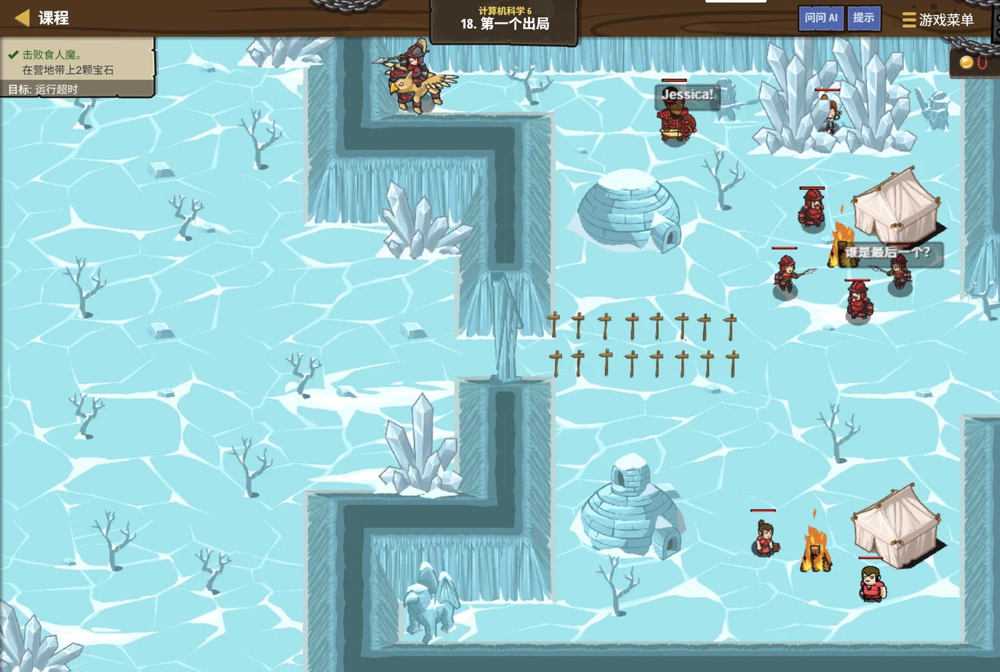

故事：运水队要按顺序通过一处窄口，每一批都只能过一部分人。
塞尼克把路线图铺在沙地上：好消息是，每次只要选"最早能出发的那一趟"，
就能过最多的人。
你有点不放心：万一选早了反而亏呢？
这就要看清楚了——他敲了敲图上的时间刻度，结束得越早，留给后面的余地越大。所以这样选，永远不会亏。
扣哒考级 · GESP C++ 五级 · 第 8 单元 | 星砂绿洲 STARDUST OASIS
最省水的路线 贪心算法与复杂度估算
Greedy & Complexity

塞尼克
沙海向导 · 你的向导
运水队停在了一处岔路口——前方有三条路，通到三处不同的水源。
队首的向导举起水囊，眯着眼比了比距离，然后指向最近的那一处。
你有点疑惑：不看看整体路线吗？万一绕远反而更省呢？
塞尼克摇摇头：这条路上，每次选最近的那处，最后就是最省水的走法。
你愣了一下：……原来"每一步都选最好的"，有时候真的就对了。
队首的向导举起水囊，眯着眼比了比距离，然后指向最近的那一处。
你有点疑惑：不看看整体路线吗？万一绕远反而更省呢？
塞尼克摇摇头：这条路上，每次选最近的那处，最后就是最省水的走法。
你愣了一下：……原来"每一步都选最好的"，有时候真的就对了。
塞尼克 · 沙海向导
这是五级的最后一课。它讲两件事：一是贪心——一种"只看眼前"的解题策略；二是复杂度估算——怎么一眼看出一段代码要跑多久。
而贪心最需要小心的地方是：它对某些问题管用，对另一些问题会给出错误答案。
assets/illustrations/py-L5-08-01_water_route.webp
【配图位】黄昏的沙丘之间，运水队停在一处岔路口：前方三条支路分别通向远处三处绿洲，路面上留有细细的足迹；队首的向导举起水囊，正眯眼比量三条路的远近，身后骆驼队顺着最短的那条支路前进；远处几个营地的水缸由近到远依次亮起微弱的光，天边是暖橙色的落日。
0 单元导语与目标
Unit Overview
0.1 学习目标
1学完这个单元，你将能……
- 说清"贪心"选的是什么
- 判断一个问题能不能用贪心
- 用贪心解决活动安排问题
- 写出最大连续子段和的解法
- 举出一个"贪心会失败"的例子
- 看代码估算时间复杂度
2对标 GESP 考纲（C++ 五级）
- 理解贪心算法的思想与适用条件
- 掌握经典贪心问题的解法与排序策略
- 理解贪心并非总能得到全局最优解
- 掌握时间复杂度的估算方法
- 考核目标：能判断贪心策略是否正确、能从代码估出复杂度
0.2 考纲对照
| 本单元小节 | 对应考纲条目 | 真题常考形式 |
|---|---|---|
| 1 什么是贪心 | 贪心的思想 | 贪心的两个前提是什么 |
| 2 活动安排问题 | 经典贪心 | 该按什么排序、选哪个（必考） |
| 3 最大连续子段和 | 贪心/递推的应用 | 给一组数，算出结果 |
| 4 贪心不是万能的 | 贪心的局限 | 去找零钱的例子（必考） |
| 5 复杂度估算 | 时间复杂度 | 从几层循环看出量级 |
1 什么是贪心
What Is Greedy
1.1 每一步都选眼前最好的
贪心算法的思路，一句话就够：
在每一步，都选择当前看起来最好的那一个——
而且选完之后绝不反悔、绝不回头。
它不去"通盘考虑"，也不去"退回来换一条路"。 走一步看一步，一步比一步更接近答案。
它的最大优点就是"快"—— 通常只要排个序、再扫一遍，就能得出结论。
它不去"通盘考虑"，也不去"退回来换一条路"。 走一步看一步，一步比一步更接近答案。
它的最大优点就是"快"—— 通常只要排个序、再扫一遍，就能得出结论。
贪心 vs 枚举：两种截然不同的做法
TEXT
【枚举】把所有的可能都试一遍，再挑最好的
缺点：可能慢得离谱（指数级）
【动态规划】把中间结果存起来，一步步推
缺点：不容易想，状态转移方程常常很难写
【贪心】每一步都选眼前最好的，选完就不管了
优点：快、代码短
缺点：不一定对啊！
关键问题是：什么样的题，贪心能得到正确答案？
这就是下面两节要回答的事。贪心是"最短的路"
但它只有在满足特定条件时，才保证通向正确答案
1.2 贪心需要的两个前提
贪心要成立，必须满足两个条件：
① 贪心选择性质——每一步的局部最优选择，一定能通向全局最优解。
也就是说"当下选最好的"这个决定，永远不会让你后悔。
② 最优子结构——做出了这次选择之后，剩下的问题仍然是"同样形状的、更小的问题"。
两个条件都满足，贪心才能保证给出正确答案。
而这两个条件恰恰是"证明起来很难"的——所以贪心题的正确答案， 往往要先想清楚为什么。
② 最优子结构——做出了这次选择之后，剩下的问题仍然是"同样形状的、更小的问题"。
两个条件都满足，贪心才能保证给出正确答案。
而这两个条件恰恰是"证明起来很难"的——所以贪心题的正确答案， 往往要先想清楚为什么。
打个比方：
贪心就像走山路时"每次都挑最平缓的那一步"。
在一条一直向上的缓坡上，这么走一定能登顶。
但如果山路中间有个坑、需要先下坡再上坡呢？ 每次都挑"往上走"的那一步，就会卡在原地动不了。
这就是贪心"选完不反悔"的代价。
在一条一直向上的缓坡上，这么走一定能登顶。
但如果山路中间有个坑、需要先下坡再上坡呢？ 每次都挑"往上走"的那一步，就会卡在原地动不了。
这就是贪心"选完不反悔"的代价。
2 活动安排问题
Activity Selection
2.1 按结束时间排序
问题：一间教室，最多能安排几场活动？
TEXT
有若干场活动，每场都有开始时间和结束时间。
一间教室同一时刻只能有一场活动，求最多能安排几场。
【直觉上的几种贪心策略，只有一种是对的】
✘ 每次选开始时间最早的
——可能选了一场从早到晚占满全天的活动，把别的全挤掉了
✘ 每次选持续时间最短的
——可能选了一场 12:00~12:10 的活动，
而它前后各有一场大活动都挤不进去了
✘ 每次选参与人数最少的
——人数和"能排几场"根本没关系
✔ 按结束时间从早到晚排序，
依次选择"与已选活动不冲突"的活动
为什么这个对？——见下一节。正确答案
按
end（结束时间）升序排序，贪心地选"开始时间 ≥ 上一个的结束时间"的活动
活动安排的代码
C++
struct Activity { int start, end; };
bool cmp(const Activity &x, const Activity &y) {
return x.end < y.end; // ★ 按结束时间升序
}
sort(act, act + n, cmp); // 先排序
int cnt = 0, lastEnd = -1; // lastEnd：上一场活动的结束时间
for (int i = 0; i < n; i++) {
if (act[i].start >= lastEnd) { // ★ 不冲突
cnt++;
lastEnd = act[i].end; // 更新"上一场的结束时间"
}
}
cout << cnt << endl;排序
O(n log n) + 扫描 O(n)
总复杂度 O(n log n)——又快又简单2.2 为什么这样选最优
核心直觉："结束得越早，给后面留的地方越多。"
假设我们已经在候选里找了"结束时间最早"的那一场 A。
那任何一组最优解，都可以把它换掉—— 而且换掉之后方案不会变差。
理由：设最优解里的第一场是 B。 因为 A 是所有活动里结束最早的，所以 A 结束的时间 ≤ B 结束的时间。
把 B 换成 A 之后，第一场结束得更早—— 留给后面活动的空余时间只会变多，绝不会变少。
所以"选 A"绝不会吃亏，这就是"贪心选择性质"的证明。
那任何一组最优解，都可以把它换掉—— 而且换掉之后方案不会变差。
理由：设最优解里的第一场是 B。 因为 A 是所有活动里结束最早的，所以 A 结束的时间 ≤ B 结束的时间。
把 B 换成 A 之后，第一场结束得更早—— 留给后面活动的空余时间只会变多，绝不会变少。
所以"选 A"绝不会吃亏，这就是"贪心选择性质"的证明。
这一节的通用教训：
同一道贪心题，策略可能有好几种，但往往只有一种是正确的。
"选开始最早的"、"选最短的"、"选人数最少的"——听起来都挺合理，却都是错的。
所以做贪心题时，一定要能说清"为什么这样选不会吃亏"， 而不是凭感觉挑一个看起来顺眼的。
"选开始最早的"、"选最短的"、"选人数最少的"——听起来都挺合理，却都是错的。
所以做贪心题时，一定要能说清"为什么这样选不会吃亏"， 而不是凭感觉挑一个看起来顺眼的。
图 2（SVG）：活动安排——结束得越早，留给后面的空间越大
3 最大连续子段和
Maximum Subarray Sum
3.1 边走边记
问题：找一段"连续"的数，让它们的和最大
TEXT
数组： -2 3 -1 5 -6 2
↑
从哪一段开始、到哪一段结束，和最大？
一段段数过去：
3 + (-1) + 5 = 7 ← 最大
而 3 - 1 + 5 - 6 = 1，加了 -6 反而变小了
所以取到 5 为止就停。
【贪心的想法】边走边记当前的"连续和"：
如果加完变成负数了，说明前面这一段"拖后腿"——
干脆从下一个数重新开始。
每一步都顺手更新"见过的最大值"。核心决策
current 表示"以当前位置结尾的最大和"——
一旦加上某个数后它变小了，就说明该重新起头3.2 代码与递推式
代码只有几行
C++
int maxSubArray(const vector<int> &a) {
int best = a[0]; // 见过的最大和
int current = a[0]; // 以当前位置结尾的最大和
for (int i = 1; i < (int)a.size(); i++) {
current = max(a[i], current + a[i]); // ★ 要么接着前一段，要么重新起头
best = max(best, current); // ★ 顺手更新答案
}
return best;
}用 {-2, 3, -1, 5, -6, 2} 走一遍
起头：
i=1：
i=2：
i=3：
i=4：
i=5：
答案：7
起头：
best = −2, current = −2i=1：
current = max(3, −2+3=1) = 3，best = 3i=2：
current = max(−1, 3−1=2) = 2，best = 3i=3：
current = max(5, 2+5=7) = 7，best = 7i=4：
current = max(−6, 7−6=1) = 1，best = 7i=5：
current = max(2, 1+2=3) = 3，best = 7答案：7
这段代码的"递推式"：
读作："要么把 a[i] 接到前面那一段后面， 要么干脆从 a[i] 这里重新起一段——哪个更大就选哪个。"
而
时间复杂度
current[i] = max(a[i], current[i−1] + a[i])读作："要么把 a[i] 接到前面那一段后面， 要么干脆从 a[i] 这里重新起一段——哪个更大就选哪个。"
而
best 全程记着"见过的最大值"，最后就是答案。时间复杂度
O(n)、空间 O(1)——
扫一遍就完事。
为什么"重新起头"是对的？
如果加完
既然拖着它只会让结果更小，那不如扔掉它、从 a[i] 重新开始。
这就是"贪心"的味道：一旦发现前面那段不划算，立刻舍弃，绝不回头。
current + a[i] 比单独的 a[i] 还小，
说明前面那一段的整体贡献是"负的"——拖了后腿。既然拖着它只会让结果更小，那不如扔掉它、从 a[i] 重新开始。
这就是"贪心"的味道：一旦发现前面那段不划算，立刻舍弃，绝不回头。
4 贪心不是万能的
When Greedy Fails
4.1 找零钱的陷阱
经典反例：用最少的硬币凑出某个金额
TEXT
【贪心做法】每次都用面额最大的硬币，能用就用
代码很简单：
int count = 0;
for (int coin : coins) { // coins 按面额从大到小排好
count += money / coin;
money %= coin;
}
【在人民币上，它是对的】
面额 1、5、10、20、50、100 → 贪心能得到最少硬币数 ✔
【换个面额集合就错了】
面额集合：{1, 3, 4}，要凑 6
贪心：先拿最大的 4，剩 2 → 再拿 1、1
一共 3 枚（4 + 1 + 1）
最优：拿两个 3
一共 2 枚（3 + 3）✔
贪心给出 3 枚，最优是 2 枚 —— 贪心错了！结论
"每次选最大面额"这个贪心策略，对任意硬币面额集合并不成立
这类问题的通用解法要用动态规划（六级的内容）
这类问题的通用解法要用动态规划（六级的内容）
4.2 什么时候会失败
"贪心算法只要每一步选当前最优，就一定能得到全局最优解"——这句话是错的。
错在哪？因为"局部最优"不自动等于"全局最优"。
找零钱的例子就是铁证： 第一步拿 4 确实是"当前最优"（拿得最多），可它把路走窄了—— 剩下 2 只能用两个 1 凑，最终用了 3 枚，而不是最优的 2 枚。
所以贪心能否成立，必须针对具体问题去证明—— "贪心选择性质"和"最优子结构"这两条不是白写的。
拿到一道贪心题，先问自己三句话：
① 我的策略是什么？（选哪个、按什么排序）；
② 为什么这样选绝不会吃亏？；
③ 能不能举出一个反例？——举不出来，才敢放心用。
找零钱的例子就是铁证： 第一步拿 4 确实是"当前最优"（拿得最多），可它把路走窄了—— 剩下 2 只能用两个 1 凑，最终用了 3 枚，而不是最优的 2 枚。
所以贪心能否成立，必须针对具体问题去证明—— "贪心选择性质"和"最优子结构"这两条不是白写的。
拿到一道贪心题，先问自己三句话：
① 我的策略是什么？（选哪个、按什么排序）；
② 为什么这样选绝不会吃亏？；
③ 能不能举出一个反例？——举不出来，才敢放心用。
几种思路，怎么选？
枚举——范围小、想不到别的办法时用，最稳但最慢。
贪心——能证明"选眼前最优不吃亏"时用，最快最简洁。
动态规划——贪心不成立、但问题有"最优子结构"时用，最通用。
顺序建议：先想贪心（快），贪心证不出来就换动态规划（稳）。
贪心——能证明"选眼前最优不吃亏"时用，最快最简洁。
动态规划——贪心不成立、但问题有"最优子结构"时用，最通用。
顺序建议：先想贪心（快），贪心证不出来就换动态规划（稳）。
assets/illustrations/py-L5-08-02_coin_change.webp
【配图位】绿洲帐篷内的兑换台：一只木盘里摆着大小不同的发光钱币，柜台后的商人先递出最大的一枚、再逐次递出越来越小的硬币（表示"每次都用最大的"）；柜台一角另有一只小盘，里面只摆着两枚同样大的中等硬币、被一圈光晕圈出（表示真正的最优解）；一名披沙色斗篷的向导站在台前，手指在两只盘子之间犹豫。
5 复杂度估算
Estimating Complexity
5.1 从代码里数出来
估算复杂度的三步：
① 数循环层数——单层、两层、三层……；
② 看每层跑多少次——"每次加 1"是 n 次，"每次乘 2"是 log n 次；
③ 乘起来，只留最高次项——常数和低次项都扔掉。
比如
② 看每层跑多少次——"每次加 1"是 n 次，"每次乘 2"是 log n 次；
③ 乘起来，只留最高次项——常数和低次项都扔掉。
比如
3n² + 5n + 100，就记作 O(n²)。
从几段代码看复杂度
C++
// ① 单层循环，每轮 +1 → O(n)
for (int i = 0; i < n; i++) sum += a[i];
// ② 两层嵌套，各 n 次 → O(n²)
for (int i = 0; i < n; i++)
for (int j = 0; j < n; j++)
cnt++;
// ③ 外层 n 次，内层每次翻倍 → O(n log n)
for (int i = 0; i < n; i++)
for (int j = 1; j < n; j *= 2)
cnt++;
// ④ 单层循环，但每轮翻倍 → O(log n)
for (int i = 1; i < n; i *= 2) cnt++;
// ⑤ 三层嵌套，各 n 次 → O(n³)
for (int i = 0; i < n; i++)
for (int j = 0; j < n; j++)
for (int k = 0; k < n; k++) cnt++;判据
看"内层到底跑多少次"，而不是单纯数几层循环
j *= 2 是 log n 次，j++ 才是 n 次5.2 常见量级对照表
| 复杂度 | 叫法 | n = 10⁶ 时的量级 | 典型算法 |
|---|---|---|---|
O(1) | 常数阶 | 1 | 按公式直接算 |
O(log n) | 对数阶 | 约 20 | 二分查找、快速幂 |
O(n) | 线性阶 | 100 万 | 遍历数组、埃氏筛 |
O(n log n) | 线性对数阶 | 约 2000 万 | 归并排序、快速排序、贪心加排序 |
O(n²) | 平方阶 | 1 万亿（必超时） | 冒泡排序、选择排序、两层枚举 |
O(2ⁿ) | 指数阶 | 天文数字 | 枚举所有子集、朴素递归斐波那契 |
怎么判断"会不会超时"？
一般的题目，1 秒内大约能做 10⁸ 次简单运算。
所以拿 n 的上限代进去估一估：
养成习惯：写代码前先看数据范围，反推"我最多能用什么复杂度的算法"。
所以拿 n 的上限代进去估一估：
n = 10⁵：O(n²) 是 10¹⁰——
超时！必须用 O(n log n) 或更快的算法。n = 10³：O(n²) 是 10⁶——
完全没问题，随便写。n = 10⁹：连 O(n) 都跑不完，
必须用 O(log n) 或 O(1) 的做法。养成习惯：写代码前先看数据范围，反推"我最多能用什么复杂度的算法"。
图 4（SVG）：复杂度阶梯——从快到慢
assets/illustrations/py-L5-08-03_complexity_ladder.webp
【配图位】绿洲外的沙丘上凿着一道石阶，台阶自下而上依次变陡：最下面几级平缓明亮（代表 O(1)、O(log n)），中间几级开始抬升（O(n)、O(n log n)），上面几级陡峭发红、几乎垂直（O(n²)、O(2ⁿ)）；一名披沙色斗篷的向导站在中段台阶上，仰头看着上方陡坡，脚边沙粒正沿着陡坡滚落。
6 代码实战
Level Practice
关卡
第一个出局
进入关卡 →思路：用贪心——先按结束时间排序， 再依次挑选互不冲突的时段。

assets/stages/py-L5-08-stage1_first_out.webp
【截图位】第一个出局关卡：绿洲窄口与排队单位同框，代码编辑区可见排序比较函数与贪心扫描循环。
排序 + 一趟扫描，解决活动安排
C++
#include <iostream>
#include <algorithm>
using namespace std;
struct Task { int s, e; };
Task a[100005];
bool cmp(const Task &x, const Task &y) {
return x.e < y.e; // ★ 按结束时间从小到大
}
int main() {
int n;
cin >> n;
for (int i = 0; i < n; i++) cin >> a[i].s >> a[i].e;
sort(a, a + n, cmp); // ① 先排序
int cnt = 0, last = -1; // last：上一个被选中任务的结束时间
for (int i = 0; i < n; i++) {
if (a[i].s >= last) { // ② 不冲突就选它（贪心）
cnt++;
last = a[i].e;
}
}
cout << cnt << endl;
return 0;
}输入 4 / 1 3 / 2 4 / 3 5 / 4 6 输出 2
选中的是 [1,3] 和 [3,5]（或 [1,3] 和 [4,6]）——最多 2 场
选中的是 [1,3] 和 [3,5]（或 [1,3] 和 [4,6]）——最多 2 场
和本单元的关系：
这段代码把"贪心"的两个动作都体现出来了：排序 + 一趟扫描。
排序是为了让贪心"每次都能挑到当前最好的"—— 按结束时间排好之后，"第一个不冲突的"就是当轮的最优选择。
复杂度是
顺便练一下估算： n 要是到了 10⁵，
去扣哒世界闯这一关 →
排序是为了让贪心"每次都能挑到当前最好的"—— 按结束时间排好之后，"第一个不冲突的"就是当轮的最优选择。
复杂度是
O(n log n)：
排序花 O(n log n)，扫描只花 O(n)——排序是瓶颈。顺便练一下估算： n 要是到了 10⁵，
O(n log n) 大约 170 万次运算，
一秒内轻松跑完。而如果写成 O(n²) 的两两比较，就是 100 亿次——
必然超时。
7 常见陷阱
Common Pitfalls

扣哒鸭 · 调试官
贪心的坑只有一个核心：你以为它是对的，其实它不是。四条。
1
以为"局部最优"一定能凑成"全局最优"。

扣哒鸭："贪心算法只要每一步选当前最优，就一定能得到全局最优解"——这句话是错的。
找零钱的例子就是铁证：面额 {1,3,4} 凑 6，贪心给 3 枚，最优只要 2 枚。
找零钱的例子就是铁证：面额 {1,3,4} 凑 6，贪心给 3 枚，最优只要 2 枚。
正确认识：贪心成立需要额外条件（贪心选择性质 + 最优子结构）
2
认为"每次选面额最大的硬币"在任何面额下都对。

扣哒鸭：它在人民币、美元这些"标准面额"上确实对，
可换成 {1, 3, 4} 这种集合就错了。
题目里没保证"面额是标准的"，就不能用这个贪心。
题目里没保证"面额是标准的"，就不能用这个贪心。
记牢：找零钱求最少硬币数，通用解法要用动态规划
3
活动安排按"开始时间"或"持续时间"排序。

扣哒鸭：这两种都是错的。
按开始时间排，可能一上来就选了一场占满全天的活动，把别的全挤掉。
按持续时间排，可能选了一场卡在两场大活动中间的小活动。
唯一正确的做法是按结束时间排。
按开始时间排，可能一上来就选了一场占满全天的活动，把别的全挤掉。
按持续时间排，可能选了一场卡在两场大活动中间的小活动。
唯一正确的做法是按结束时间排。
正确做法：按
end 升序，选不冲突的4
估复杂度时只数循环层数，不看内层跑多少次。

扣哒鸭：两层循环不等于 O(n²)。
如果内层写的是
如果内层写的是
j *= 2，它只跑 log n 次，
两层合起来是 O(n log n)，不是 O(n²)。判据："每次加 1"是 n 次，"每次乘 2"是 log n 次
8 题目练习
Practice
前 4 题改编自 C++ 五级真题，其余为原创练习题。
改编自 2026 年 9 月 · C++ 五级 · 第 13 题单选题
小杨要在一个教室安排尽可能多场活动，每场活动具有开始时间
start
和结束时间 end。采用贪心算法时，正确的选择策略是（ ）。
A.每次选择开始时间最早的活动
B.每次选择持续时间最短的活动
C.每次选择参与人数最少的活动
D.按结束时间从早到晚排序，依次选择与已选活动不冲突的活动
B.每次选择持续时间最短的活动
C.每次选择参与人数最少的活动
D.按结束时间从早到晚排序，依次选择与已选活动不冲突的活动
查看答案与详解
答案：D。核心直觉是："结束得越早，给后面留的空间越大。"
为什么 D 对？假设所有活动里"结束最早"的那一场是 A， 而某组最优解里的第一场是 B—— 因为 A 结束得最早，所以 A 的结束时间不会晚于 B。
把 B 换成 A 之后，第一场结束得更早， 留给后面活动的余地只会变多、不会变少。 所以这样选永远不会吃亏——这正是"贪心选择性质"。
A 项为什么错？ 如果一上来就选了一场"从早到晚占满全天"的活动， 后面所有活动都被挤掉了，只能排 1 场。
B 项为什么错？ 可能选中一场"卡在两场大活动中间"的短活动—— 看起来它很短很划算，可它把前后两场都挡住了，反而少排了一场。
C 项为什么错？ 参与人数和"能排几场"根本没有任何关系。
本题最值得记住的一点： 同一道贪心题往往有好几种"听起来都挺合理"的策略，但只有一种是对的—— 必须能说清"为什么这样选不吃亏"。
对应小节2.1 按结束时间排序。
为什么 D 对？假设所有活动里"结束最早"的那一场是 A， 而某组最优解里的第一场是 B—— 因为 A 结束得最早，所以 A 的结束时间不会晚于 B。
把 B 换成 A 之后，第一场结束得更早， 留给后面活动的余地只会变多、不会变少。 所以这样选永远不会吃亏——这正是"贪心选择性质"。
A 项为什么错？ 如果一上来就选了一场"从早到晚占满全天"的活动， 后面所有活动都被挤掉了，只能排 1 场。
B 项为什么错？ 可能选中一场"卡在两场大活动中间"的短活动—— 看起来它很短很划算，可它把前后两场都挡住了，反而少排了一场。
C 项为什么错？ 参与人数和"能排几场"根本没有任何关系。
本题最值得记住的一点： 同一道贪心题往往有好几种"听起来都挺合理"的策略，但只有一种是对的—— 必须能说清"为什么这样选不吃亏"。
对应小节2.1 按结束时间排序。
改编自 2026 年 9 月 · C++ 五级 · 第 14 题单选题
下面函数使用迭代方法求最大连续子段和。
对于数组
{-2, 3, -1, 5, -6, 2}，函数返回值是（ ）。int maxSubArray(const vector<int> &a) {
int best = a[0];
int current = a[0];
for (int i = 1; i < (int)a.size(); i++) {
current = max(a[i], current + a[i]);
best = max(best, current);
}
return best;
}
A.
5 B.6 C.7 D.8查看答案与详解
答案：C。一步一步跟着走（这一类题千万不要心算跳步）：
初始：
i=1（a[1]=3）：
i=2（a[2]=−1）：
i=3（a[3]=5）：
i=4（a[4]=−6）：
i=5（a[5]=2）：
返回 7 ✔
验算一下：最大的一段是
A 项（5）是只取了单个元素 5； D 项（8）可能是漏算了 −1。
关键理解：
对应小节3.2 代码与递推式。
初始：
best = −2，current = −2i=1（a[1]=3）：
current = max(3, −2+3=1) = 3；
best = max(−2, 3) = 3i=2（a[2]=−1）：
current = max(−1, 3−1=2) = 2；
best = 3i=3（a[3]=5）：
current = max(5, 2+5=7) = 7；
best = 7i=4（a[4]=−6）：
current = max(−6, 7−6=1) = 1；
best = 7i=5（a[5]=2）：
current = max(2, 1+2=3) = 3；
best = 7返回 7 ✔
验算一下：最大的一段是
3 + (−1) + 5 = 7，
从下标 1 到下标 3。再往后加 −6 就掉到 1 了，所以取到 5 为止。A 项（5）是只取了单个元素 5； D 项（8）可能是漏算了 −1。
关键理解：
current = max(a[i], current + a[i]) 的意思是
"要么接着前一段，要么从 a[i] 重新起头"。对应小节3.2 代码与递推式。
改编自 2026 年 9 月 · C++ 五级 · 判断题 第 9 题判断题
下面的贪心代码一定能对任意硬币面值集合
coins
求出 money 所需的最少硬币数。（ ）int count = 0;
for (int coin : coins) { // coins 按面值从大到小排列
count += money / coin;
money %= coin;
}
查看答案与详解
答案：错误（×）。这是贪心算法最经典的反例。
反例：面额集合 {1, 3, 4}，要凑出 6。
贪心做法：先拿最大的 4，剩 2；再拿两个 1—— 一共 3 枚（4 + 1 + 1）。
最优做法：拿两个 3—— 一共 2 枚（3 + 3）。
贪心要用 3 枚，最优只要 2 枚——它给出的是错答案。
为什么贪心在这里失灵？ 因为第一步拿 4 虽然是"当前最优"（拿得最多）， 但它把剩下的路走窄了：只剩 2，只能用两个 1 去凑。
"局部最优"不自动等于"全局最优"——这就是问题的根源。
那它什么时候是对的？ 在人民币、美元这类"标准面额体系"下，每个面额都是前一个的倍数左右， 这时贪心确实成立。
但题目说的是"任意硬币面值集合"——没有这个保证，所以说法是错的。
这类"最少硬币数"问题，通用解法要用动态规划（六级的内容）。
对应小节4.1 找零钱的陷阱。
反例：面额集合 {1, 3, 4}，要凑出 6。
贪心做法：先拿最大的 4，剩 2；再拿两个 1—— 一共 3 枚（4 + 1 + 1）。
最优做法：拿两个 3—— 一共 2 枚（3 + 3）。
贪心要用 3 枚，最优只要 2 枚——它给出的是错答案。
为什么贪心在这里失灵？ 因为第一步拿 4 虽然是"当前最优"（拿得最多）， 但它把剩下的路走窄了：只剩 2，只能用两个 1 去凑。
"局部最优"不自动等于"全局最优"——这就是问题的根源。
那它什么时候是对的？ 在人民币、美元这类"标准面额体系"下，每个面额都是前一个的倍数左右， 这时贪心确实成立。
但题目说的是"任意硬币面值集合"——没有这个保证，所以说法是错的。
这类"最少硬币数"问题，通用解法要用动态规划（六级的内容）。
对应小节4.1 找零钱的陷阱。
改编自 2026 年 6 月 · C++ 五级 · 判断题 第 6 题判断题
贪心算法只要每一步选择当前最优解，就一定能得到全局最优解。（ ）
查看答案与详解
答案：错误（×）。这句话是贪心这一课最需要纠正的误解。
正确的说法是： 只有当问题满足"贪心选择性质"和"最优子结构"这两个条件时， 贪心才能保证得到全局最优解。
"贪心选择性质"是什么意思？ 每一步的局部最优选择，一定能通向某个全局最优解——换句话说， 这样选永远不会让你后悔。
为什么它不总是成立？还是那个找零钱的例子：
面额 {1, 3, 4} 凑 6——第一步拿 4 是"当前最优"，可结果用了 3 枚，而最优只要 2 枚。
所以"当前最优"和"全局最优"之间，并没有必然的桥。
拿到一道题，正确的思考顺序是：
① 先想一个贪心策略；
② 努力证明它不会吃亏（或者找反例）；
③ 证不出来就换动态规划。
一句话记住： 贪心是一种"猜想"，猜对了才成立——所以它总是需要证明或者反例检验。
对应小节4.2 什么时候会失败。
正确的说法是： 只有当问题满足"贪心选择性质"和"最优子结构"这两个条件时， 贪心才能保证得到全局最优解。
"贪心选择性质"是什么意思？ 每一步的局部最优选择，一定能通向某个全局最优解——换句话说， 这样选永远不会让你后悔。
为什么它不总是成立？还是那个找零钱的例子：
面额 {1, 3, 4} 凑 6——第一步拿 4 是"当前最优"，可结果用了 3 枚，而最优只要 2 枚。
所以"当前最优"和"全局最优"之间，并没有必然的桥。
拿到一道题，正确的思考顺序是：
① 先想一个贪心策略；
② 努力证明它不会吃亏（或者找反例）；
③ 证不出来就换动态规划。
一句话记住： 贪心是一种"猜想"，猜对了才成立——所以它总是需要证明或者反例检验。
对应小节4.2 什么时候会失败。
原创练习题单选题
下面代码的时间复杂度是（ ）。
for (int i = 0; i < n; i++) {
for (int j = 1; j < n; j *= 2) {
cout << i + j << " ";
}
}
A.
O(n) B.O(n log n) C.O(n²) D.O(2ⁿ)查看答案与详解
答案：B。关键在内层循环的推进方式——是"乘 2"，不是"加 1"。
内层：
要几次才能到 n？大约
外层：跑 n 次。
合起来：
C 项（O(n²)）是"只数循环层数、不看内层跑多少次"的典型错误—— 如果把内层改成
记忆口诀： "每次乘 2 / 除 2"→ log n 次；"每次加 1"→ n 次。
顺带说说实际意义： n = 10⁶ 时，
对应小节5.1 从代码里数出来。
内层：
j 从 1 开始，每次乘以 2：1 → 2 → 4 → 8 → 16……要几次才能到 n？大约
log₂n 次。外层：跑 n 次。
合起来：
n × log n，也就是 O(n log n) ✔C 项（O(n²)）是"只数循环层数、不看内层跑多少次"的典型错误—— 如果把内层改成
j++，那才是 O(n²)。记忆口诀： "每次乘 2 / 除 2"→ log n 次；"每次加 1"→ n 次。
顺带说说实际意义： n = 10⁶ 时，
O(n log n) 约 2000 万次（能过），
而 O(n²) 是 10¹² 次（必然超时）——
看清内层怎么走，直接决定了你的程序能不能过。对应小节5.1 从代码里数出来。
原创练习题判断题
在最大连续子段和问题中，若当前得到的"以 i 结尾的最大和"加上
a[i+1] 之后反而变小了，说明前面那一段整体的贡献是负的，
此时从 a[i+1] 重新起一段更划算。（ ）查看答案与详解
答案：正确（√）。这正是那段代码里
看这句：
它表达的是"二选一"：
选
选
取两者的较大值，就是"以 i 结尾的最大和"。
什么时候"重新起头"会赢？ 当
举个具体例子：数组
到 5 时，
这正是贪心的味道： 一旦发现前面那段不再划算，立刻舍弃、绝不回头。
对应小节3.2 代码与递推式。
max 的用意所在。看这句：
current = max(a[i], current + a[i]);它表达的是"二选一"：
选
current + a[i] —— 把 a[i] 接到前面那一段的后面；选
a[i] —— 扔掉前面，从 a[i] 重新起一段。取两者的较大值，就是"以 i 结尾的最大和"。
什么时候"重新起头"会赢？ 当
current 是负数时——
接着它只会让新和更小，说明前面那段是"拖后腿"的，扔掉它反而更好。举个具体例子：数组
{3, −10, 5}——current 走到 −10 时，max(−10, 3−10=−7) = −7（还是负的）；到 5 时，
max(5, −7+5=−2) = 5 ——
这时候就"重新起头"了，前面的 3 和 −10 全被扔掉。这正是贪心的味道： 一旦发现前面那段不再划算，立刻舍弃、绝不回头。
对应小节3.2 代码与递推式。
原创练习题编程题
题目要求：读入
样例：输入
n 个整数，
求它们的最大连续子段和（至少取一个数）。样例：输入
6 / -2 3 -1 5 -6 2，
输出 7。查看参考答案与要点
#include <iostream>
#include <algorithm>
using namespace std;
int a[100005];
int main() {
int n;
cin >> n;
for (int i = 0; i < n; i++) cin >> a[i];
int best = a[0]; // 见过的最大和
int cur = a[0]; // 以当前位置结尾的最大和
for (int i = 1; i < n; i++) {
cur = max(a[i], cur + a[i]); // 接着前一段 或 重新起头
best = max(best, cur); // 顺手更新答案
}
cout << best << endl;
return 0;
}
输入 6 / -2 3 -1 5 -6 2 输出：7
要点：
① 核心就是那一句 cur = max(a[i], cur + a[i]);——
"接着前一段"还是"重新起头"，取更大的那个；
② 两个变量的初值都取 a[0]，不能取 0——
因为题目要求"至少取一个数"，如果全是负数，
答案应该是那个最大的负数，而不是 0。；
③ 循环从 i = 1 开始，因为下标 0 已经当初值用掉了；
④ 每一步都要更新 best——
因为最大的一段不一定结束在最后；
⑤ 复杂度 O(n)、空间 O(1)，
扫一遍就完事——这比"枚举所有区间"的 O(n²) 快得多。
（如果一定要允许"一个都不取"，那就把 best 的初值改成 0 即可。）
对应小节3.2 代码与递推式。
9 本单元小结
Unit Summary
塞尼克 · 沙海向导
四句话记住这一课：一、贪心就是"每一步都选眼前最好的，选完不反悔"——快，但需要条件。
二、活动安排按"结束时间"排序才正确；开始时间、持续时间都不行。
三、贪心不总是对的——{1,3,4} 凑 6 就是反例（贪心 3 枚，最优 2 枚）。
四、估复杂度要看"内层跑多少次"：加 1 是 n 次，乘 2 是 log n 次。
绿洲走完了，五级也走完了。下一站我们登上云髓天阶—— 那里会长出一棵树，从根到枝，一路分叉到云里。
你在最省水的路上收获了什么
- 贪心——每一步都选当前最好的，选完绝不反悔。
- 贪心的两个前提——贪心选择性质（局部最优能通向全局最优） + 最优子结构。
- 贪心的优势——快、代码短，通常只要"排序 + 一趟扫描"。
- 活动安排的正确策略——按结束时间升序排序， 依次选不冲突的。
- 为什么它对——结束得越早，给后面留的空间越大，所以永远不会吃亏。
- 活动安排的复杂度——
O(n log n)（排序是瓶颈）。 - 最大连续子段和——
cur = max(a[i], cur + a[i])， 扫一遍O(n)。 - 初值取
a[0]——因为要求"至少取一个数"， 全是负数时答案应是最大的负数值，不是 0。 - 贪心的经典反例——面额 {1, 3, 4} 凑 6： 贪心 3 枚，最优 2 枚。
- "每步最优就一定全局最优"是错的——局部最优不自动等于全局最优。
- 复杂度估算法——数循环层数 × 看每层跑多少次，只留最高次项。
- 关键判据——"每次加 1"是 n 次，"每次乘 2"是 log n 次； 两层循环不等于 O(n²)。
- 常见量级排序——
O(1) < O(log n) < O(n) < O(n log n) < O(n²) < O(2ⁿ)。 - 会不会超时——1 秒大约 10⁸ 次运算； 拿 n 的上限代进去估一估就知道。
下一站：云髓天阶
星砂绿洲的尽头，石阶一路向上，渐渐没入云海。
云层之上，一株发光的巨树从台阶缝隙里长出来——
枝桠一分二、二分四，一路向天空分叉，每个枝梢都挂着不同颜色的小灯笼。
下一级我们从"树"开始：一种天生就层层分叉的结构。